Astronomia (AST0001) · Curso de Física · UDESC
Gravitação newtoniana e dinâmica orbital
Aula 5 · Capítulo 5 · de onde vêm as três leis, e como uma órbita vira massa
Prof. Dr. Rafael Camargo Rodrigues de Lima · 2026/2
O que esta aula responde
- De onde vem a constante da terceira lei — e por que ela é a mesma para todos
- As três leis de Kepler deduzidas de uma única equação de movimento
- Por que órbitas abertas existem, coisa que Kepler não podia saber
- Como uma órbita medida vira uma massa em quilogramas
- Por que um sistema autogravitante esquenta ao perder energia
A Aula 4 descreveu as órbitas. Esta explica.
O que o Capítulo 4 deixou em aberto
- Kepler tirou P² ∝ a³ dos dados de Tycho — e parou aí
- Não sabia de onde vinha a constante
- Nem por que ela é a mesma para os oito planetas
- Nem o que aconteceria com um corpo que não voltasse
- As três leis eram descrição. Faltava a causa.
Newton publica a resposta em 1687, setenta e oito anos depois da primeira lei.
Órbitas são uma balança
Vale para planetas ao redor do Sol, estrelas ao redor do centro galáctico, gás em discos e matéria em aglomerados. Muda a geometria, não a ideia.
E a terceira lei, na forma completa
Aparece a soma das massas, não a massa central. Em planetas a estrela domina; em binárias, não — e é aí que a lei vira instrumento.
Do laboratório da aula passada à massa do Sol
O laboratório entregou a e P a partir de ângulos. Estes dois números já dão a massa central: é o primeiro número do curso que não sai de geometria nenhuma.
O problema de dois corpos
Praticamente toda a mecânica celeste sai de um único problema, e vale resolvê-lo por completo uma vez.
Duas massas, só gravidade entre elas. Três passos, e as três leis caem.
É o último problema de muitos corpos que tem solução fechada. Com três, acaba.
Primeiro passo: separar o centro de massa
Ele se move em linha reta com velocidade constante. Trabalhando no referencial em que está parado, o problema perde três graus de liberdade.
Segundo passo: reduzir a um corpo
Idêntica à de uma partícula de massa μ orbitando um centro fixo de massa M. Dois corpos viraram um — e muda o valor de M, não a forma da solução.
Terceiro passo: o movimento é plano
ℓ é constante e perpendicular a r, logo tudo acontece em um plano fixo. Restam duas coordenadas.
A segunda lei já está aqui
A lei das áreas não depende da forma 1/r² da força — vale para qualquer força central. São a primeira e a terceira que exigem gravitação newtoniana.
A substituição de Binet
Trocar r por u = 1/r transforma uma equação difícil em uma que todo mundo sabe resolver.
A equação da órbita
Oscilador harmônico com termo forçado constante — talvez a equação diferencial mais bem comportada da física.
E a primeira lei emerge
Não foi suposta em momento nenhum: ela é a solução. E vem com um bônus — para e ≥ 1 a curva é aberta, coisa que Kepler não tinha como saber.
As quatro cônicas, de uma vez
- e = 0 — circunferência
- 0 < e < 1 — elipse: órbita ligada, volta sempre
- e = 1 — parábola: o limite exato do escape
- e > 1 — hipérbole: passa uma vez e não volta
A mesma equação descreve as quatro. O que muda é a energia do lançamento.
O semi-latus rectum liga a geometria à dinâmica
O p que no Capítulo 4 era só um comprimento da elipse agora tem conteúdo físico: é ℓ²/GM.
Aquecimento: a terceira lei no caso circular
A soma das massas não foi imposta — ela vem da equação do movimento relativo. Falta mostrar que, na elipse, r vira a.
A terceira lei, sem supor círculo
A excentricidade sumiu: órbitas muito alongadas e quase circulares de mesmo semieixo maior têm exatamente o mesmo período.
Energia orbital
Depende só do semieixo maior. Duas órbitas de mesmo a têm a mesma energia, por mais diferentes que pareçam.
A equação vis-viva
Dá a rapidez em qualquer ponto de qualquer órbita. Circular: r = a e v = √(GM/r). Escape: a → ∞. Hiperbólica: ε > 0.
Explorar: vis-viva e as quatro cônicas
Lance sempre do mesmo ponto e mude só a rapidez. À direita, a parábola cai em cima da curva de escape.
A velocidade de escape
Escapar custa exatamente √2 vezes a velocidade circular. Para a Terra, 11,2 km/s; para uma anã branca de massa solar e raio terrestre, 6 455 km/s — 2% da velocidade da luz.
Onde o corpo está em cada instante
A anomalia excêntrica E vem da projeção da elipse sobre o círculo circunscrito.
A equação de Kepler


Transcendental: não há solução fechada. Resolve-se por Newton-Raphson em poucas iterações — é o cálculo que toda efeméride faz milhões de vezes por dia.
Binárias: a órbita vira massa
Em um sistema binário cada estrela descreve uma elipse em torno do centro de massa. A geometria observada já entrega a razão das massas; a terceira lei entrega a soma.
Com as duas, saem as massas separadas.
É a única forma de obter massa estelar sem hipótese de modelo.
A amplitude da velocidade radial
O fator sen i aparece porque só se mede a projeção na linha de visada. É a limitação fundamental do método.
A função de massa
Tudo do lado direito é observável. Se apenas uma componente é vista, f(m) é um limite inferior para m₂ — e quando ele excede a massa máxima de uma estrela de nêutrons, a companheira invisível não pode ser outra coisa.
As leis de Kepler, do Capítulo 4
Painel (b): as duas famílias caem sobre retas de inclinação 3/2 com coeficientes diferentes. Agora sabemos o que o coeficiente é: G vezes a massa do corpo central.
O teorema do virial
Para um sistema ligado em equilíbrio, a média temporal de d²I/dt² se anula. Sobra 2K + U = 0.
E a consequência contraintuitiva
Se o sistema perde energia, E diminui — e portanto K aumenta. Ele esquenta ao esfriar. Sistemas autogravitantes têm capacidade térmica negativa.
Por que isso importa
- Uma estrela que irradia contrai e aquece
- Um aglomerado que evapora estrelas fica mais compacto e mais quente
- É por isso que estrelas não atingem equilíbrio térmico com o meio
- E é por isso que a evolução estelar tem a direção que tem
Uma das ideias mais profundas de toda a astrofísica, e ela cabe em duas linhas de álgebra.
Daqui em diante, leitura complementar
Marés, o problema restrito de três corpos e os pontos de Lagrange aplicam a mecânica já deduzida.
Não são pré-requisito para o laboratório. O núcleo do capítulo fecha no virial.
Forças de maré
A dependência é d⁻³, não d⁻². Por isso a Lua domina as marés terrestres apesar de o Sol ser muito mais massivo: o que conta é M/d³, e nisso a Lua ganha por 2,2 vezes.
O limite de Roche
Os raios do satélite cancelam. Um tratamento que inclua a deformação troca o 1,26 por 2,44 — o espírito é o mesmo: existe uma distância dentro da qual material não se agrega em luas.
O potencial efetivo e a constante de Jacobi
Coriolis não deriva de potencial, mas não realiza trabalho. Sobra uma integral de movimento que define regiões proibidas.
Os cinco pontos de Lagrange
(a) As curvas destacadas passam por L₁ a L₄ — a de L₁ é o oito que define os lóbulos de Roche. (b) A escala real: a raiz cúbica achata tudo, e no sistema Sol–Terra L₂ fica a 1,5 milhão de km, um centésimo da distância ao Sol.
Onde ficam, e quais são estáveis
L₁, L₂ e L₃ são instáveis — missões ali gastam algumas dezenas de m/s por ano em manutenção. L₄ e L₅ são estáveis se a razão de massas passar de 24,96, o que Sol–Júpiter satisfaz com folga: são os troianos.
O laboratório de dados
Arquivo: 02_terceira_lei_kepler.csv, nos dados dos laboratórios.
O que o laboratório pede
Agrupe por corpo central, tire a média de cada grupo e converta para quilogramas. Pelos planetas sai 1,00 M☉; pelas luas galileanas, M☉/1047 — a massa de Júpiter.
O que o artigo tem de responder
- Por que as retas do gráfico log-log são paralelas mas deslocadas — traduza o deslocamento em massa
- A Terra aparece com um satélite: o que significa uma média de um valor só?
- O que este método não mede — ele dá a soma, e só ela
A terceira pergunta é a mais importante: a lei não separa as duas massas, não diz do que o corpo é feito, e não distingue uma estrela de um buraco negro de mesma massa.
O que fica do Capítulo 5
- As três leis de Kepler não são três fatos: são uma equação de movimento, vista de três ângulos
- A primeira lei emergiu da dedução — e trouxe as órbitas abertas de brinde
- A constante da terceira lei é G vezes a soma das massas, e é isso que faz de uma órbita uma balança
- Sistemas autogravitantes esquentam ao perder energia